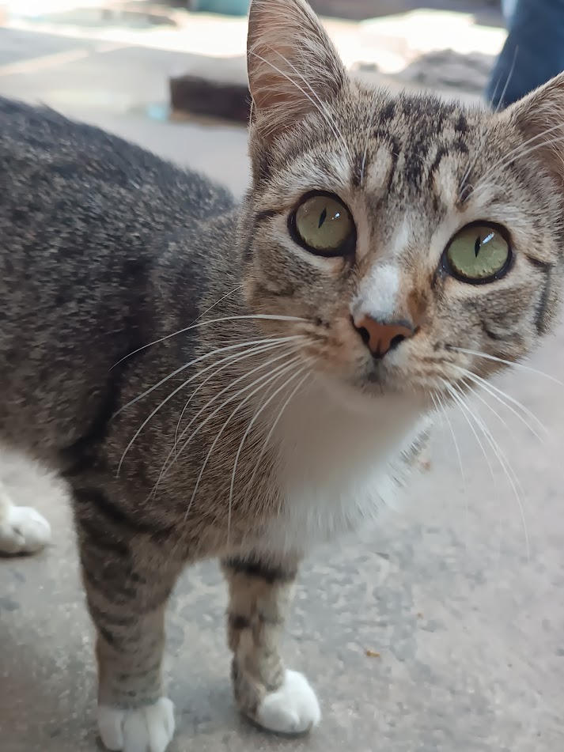
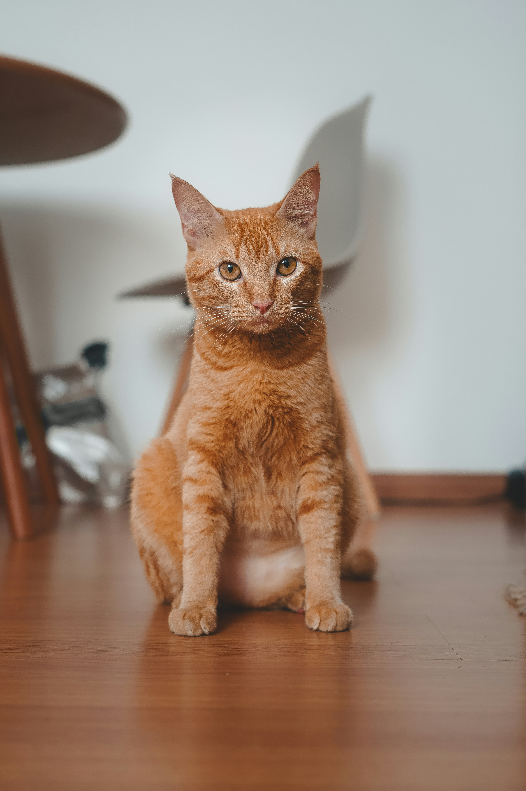
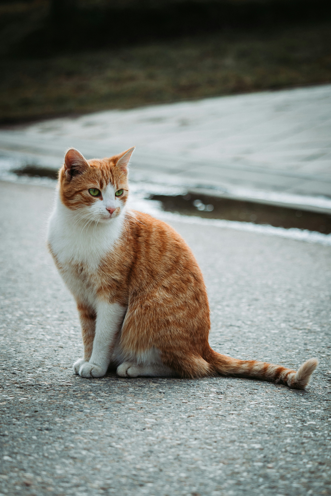

Luna
Luna es una gata juguetona y cariñosa que busca un hogar donde pueda recibir mucho amor y atención.
Conocer más
Luna es una gata juguetona y cariñosa que busca un hogar donde pueda recibir mucho amor y atención.
Conocer más

